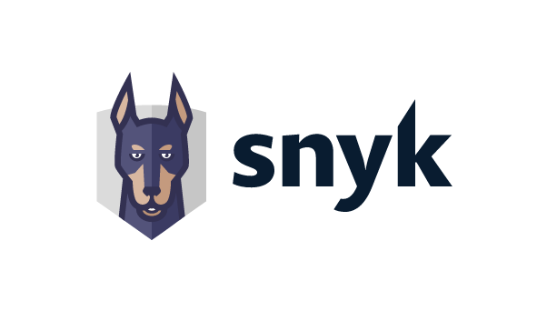
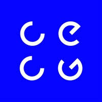
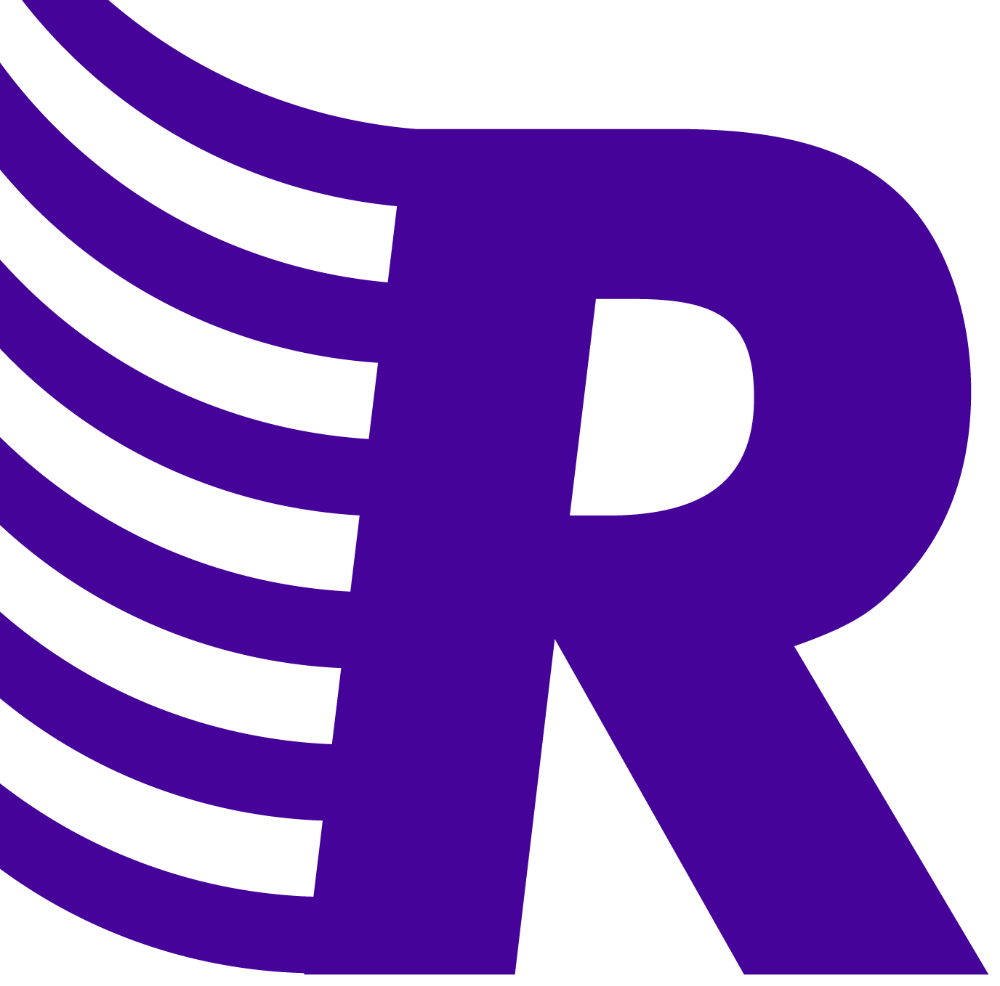
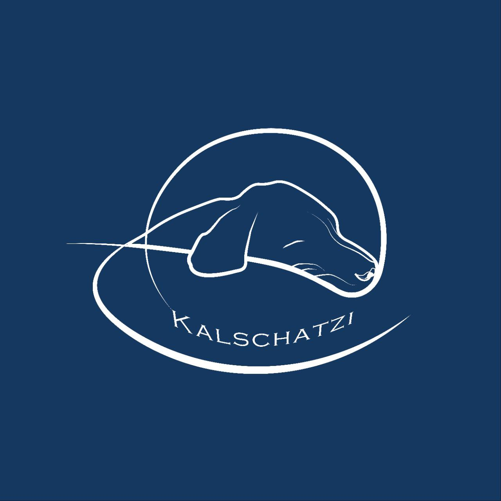

Tiago Alves
[tiago@kalschatzi.com] •
[+351 915718324] • LinkedIn • GitHub • Website
🧑💻 Summary
Staff Software Engineer with 15 years in software, specialising in AI
agent platforms, cloud-native platform architecture and security. At
Snyk I was one of the first two engineers in the AI Pentest department
and am the principal architect of its AI-powered penetration testing
service: autonomous offensive-security agents with guardrails, evals,
prompt-injection handling and gVisor sandboxes. Before that, at CECG, I
was principal architect, product owner and people manager for a
~15-engineer team building Tesco Bank’s Internal Developer Platform. It
grew from one tenant to ~50 tenant teams (250+ engineers), with security
standards defined alongside the bank’s security department. At Sky I
helped design and scale a multi-region, active-active platform serving
60M concurrent users. Active mentor and teacher.
🛠️ Key Skills
Architecture & Leadership: Distributed systems,
multi-tenant Internal Developer Platforms, event-driven and asynchronous
architectures, build-vs-buy decisions, product ownership and roadmaps,
managing through team leads, hiring, mentoring
AI & Security: LLM agents and orchestration, MCP
and tool integration, guardrails and evals, agent sandboxing (gVisor in
production, bubblewrap, seccomp; Firecracker evaluated),
prompt-injection handling, threat modelling, AppSec, penetration testing
tooling, security standards and governance
Languages: Go, Rust, Python, Java, Groovy
Cloud & Platform: AWS, GCP, Kubernetes (EKS,
GKE, multi-region), Terraform, ArgoCD, Crossplane, Config Connector,
Cilium, Envoy, GitHub Actions, Jenkins
Data: PostgreSQL, Redis, Cassandra, Apache Kafka
Reliability & Observability: SLOs, on-call and
incident management, DR testing, Prometheus, Grafana, ELK, Datadog
💼 Experience

• Snyk • Staff Software Engineer
November 2025 – Present
- One of the first two engineers in Snyk’s AI Pentest department,
helping scale it up.
- Drove adoption of Claude Code and Cursor: piloted it with a team of
5 in Snyk’s Evo department, extended it to the AI Pentest department,
and it was later adopted across Evo (~200 people). Backed it with
automated validation of code quality, documentation and conformance to
ADRs and task requirements.
- Principal architect for the AI-powered penetration testing service:
an API server and async worker orchestrating autonomous security
assessments of web applications.
- Took the service from design to general availability with paying
customers in ~6 months end to end, using agentic development.
- Building autonomous offensive-security agents on production LLM
APIs, with guardrails, evals and MCP-based tool integrations.
- Led threat modelling for the service and designed its agent
controls: prompt-injection handling for untrusted content from target
applications, tool-misuse limits, and an audit trail of agent decisions
and tool calls.
- Built a hardened sandbox for running AI agents safely, using gVisor,
bubblewrap, seccomp and network egress policies.
- Tech stack: Go, Rust, Python, PostgreSQL, Redis, Docker, Kubernetes,
Envoy

• CECG • Lead Software Engineer — Principal Architect,
Product Owner & People Manager
November 2021 – October 2025
- Principal architect, product owner and people manager for ~15
engineers, half of them through team leads, building a Kubernetes-based
Internal Developer Platform on AWS for Tesco Bank.
- Designed around a single tenant’s needs, the platform’s success and
purpose-built tooling led ~50 tenant teams (250+ engineers) across the
bank to onboard.
- Partnered with the bank’s security department to define new security
standards for cloud-native applications and built them into the
platform: default-deny networking, admission policies rejecting
non-compliant workloads, image scanning at build, deploy and run time,
and log forwarding to the bank’s SIEM.
- Owned the platform roadmap and build-vs-buy decisions, integrating
the bank’s existing identity, secrets, vulnerability management and SIEM
tooling rather than rebuilding it.
- Built an out-of-the-box, containerised Developer Platform deployable
in days.
- As principal engineer on Sky’s CMS redesign, led the move from a
monolith to small, isolated, independently deployable
microservices.
• Toptal • Lead Software Engineer
February 2018 – January 2022 — freelance, alongside full-time
roles
- Aviation maintenance app: led mobile development
and managed a team of 4 engineers, delivering the full application from
design specs (Node.js, Flutter, GCP, Serverless).
- Reinsurance company: co-designed a modern
service-oriented architecture across legacy and new systems (Nest.js,
Java, Spring Boot, AWS, PostgreSQL).

• Reachdesk •
Senior Software Engineer
January 2021 – October 2021
- Fourth engineer at the company; helped scale to 40+ people, focusing
on platform reliability and resilience with functional, integration and
load test coverage.
• Sky PLC • Senior Software Engineer
January 2016 – December 2020
- Helped design and scale the platform to support 60M concurrent
users, running active-active across regions on multiple clusters, each
hosting hundreds of tenants and thousands of applications.
- Led and improved an internal Kubernetes-based PaaS, and built highly
available REST APIs and CI/CD pipelines on Kubernetes for
microservices.
- Migrated legacy databases, delivered zero-downtime database and API
performance optimisations, and built observability dashboards in Kibana
and Grafana.
Earlier: Airnav Systems, Senior Software Engineer
(2012–2015): RadarBox24 flight-tracking apps (web and Android), a
high-throughput Java data processing server and Redis-backed REST
services. Quidgest, Software Developer (2011): PDF reporting and
code-generator tooling.
🧾 Online Writing / Public
Contributions
📂 Projects
Market Analyser – Self-hosted quantitative trading
research platform in Go: backtesting, walk-forward validation and paper
trading via Interactive Brokers.

• Kalschatzi’s Learning Platform – GitHub | Site
- Platform and content for a mentorship project supporting junior
engineers; currently mentoring 4 students.
🎓 Education
- Universidade Nova de Lisboa - Master’s in Computer
Science — 2011–2016
- Wrocław University of Science and Technology - Bachelor in
Computer Science (ERASMUS program) - 2013-2014